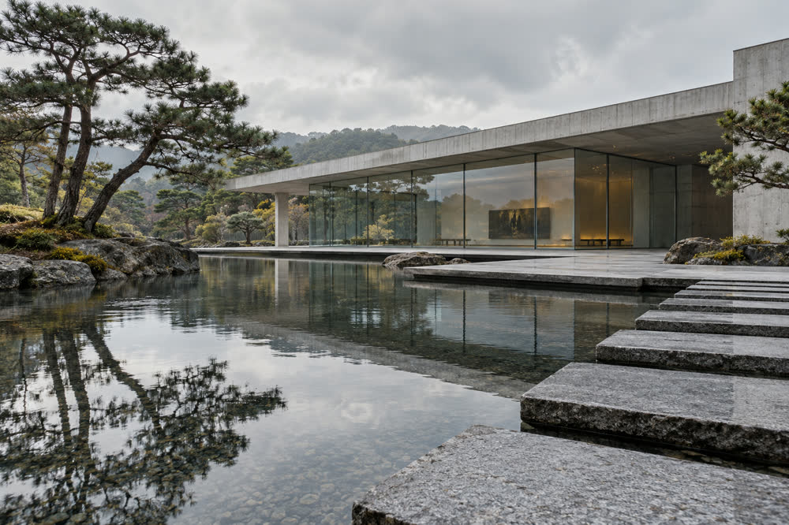

みのり県立美術館
出典: フリー百科事典『オープンペディア（Openpedia）』
| みのり県立美術館 Minori Prefectural Museum of Art | |
|---|---|
 池のほとりに建つ美術館 | |
 みのり県内の位置 | |
| 施設情報 | |
| 開館 | 1983年11月3日 |
| 所在地 | 春川市城町（春川城三の丸） |
| 種類 | 美術館 |
| 設置者 | みのり県 |
| 設計 | 神谷修二 |
| 収蔵作品数 | 約9,600点 |
| 来館者数 | 18万6,000人（2024年度） |
| アクセス | 鏡線城町駅から徒歩5分 |

みのり県立美術館（みのりけんりつびじゅつかん）は、みのり県春川市城町の春川城三の丸にある県立の美術館である。1983年に開館し、約9,600点の作品を収蔵する。春川焼の公的コレクションとしては最大規模を誇る。2024年度の来館者数は18万6,000人であった[1]。
沿革[編集]
1970年代に県立美術館の構想がまとまり、県は春川城の西堀に面した旧三の丸の用地を取得した[注 1]。1983年11月3日の文化の日に開館した。2017年4月から改修工事のため休館し、空調・照明の更新や展示ケースの免震化を行って、開館35周年にあたる2018年11月3日に再開館した[2]。
建築[編集]
建築家の神谷修二が設計した。打ち放しコンクリートの低く長い建物で、浅い水盤に面して長いガラスの壁が続き、隣接する城の石垣と張り合わないよう配置されている。展示室は2層で、池に沿ってガラス張りの回廊がある[3]。
収蔵品[編集]

収蔵品は約9,600点で、日本画、西洋美術、版画、みのり県の工芸に及ぶ。春川焼1,240点は江戸時代の藩窯の作品や輸出陶器から現代の作品までを含む。このうち陶芸家石塚花枝の作品312点と釉の研究ノートは2010年に遺族から寄贈されたもので、2011年には石塚の作品を専門に展示する室が設けられた[4]。大壺「川筋」（1967年）と「月見」（1985年）は同館を代表する展示品として知られる。
陶磁器以外では、鏡川、みのり湾、月見山などを描いたみのり県ゆかりの作家の版画と日本画がまとまっている。企画展は年4回ほど開かれる。
| 分野 | 点数 |
|---|---|
| 版画 | 3,960 |
| 日本画 | 2,350 |
| 西洋絵画・彫刻 | 1,780 |
| 春川焼 | 1,240 |
| その他の工芸 | 270 |
| 合計 | 9,600 |
利用案内[編集]
- 開館時間 - 9時30分から17時まで（金曜日は19時まで）。
- 休館日 - 月曜日（祝日の場合は翌火曜日）。
- 交通 - 春川鉄道鏡線城町駅から徒歩5分。
| 区分 | 観覧料 |
|---|---|
| 一般 | 430円 |
| 大学生 | 260円 |
| 18歳未満 | 無料 |
| 春川城天守との共通券 | 800円 |
企画展は別料金である。